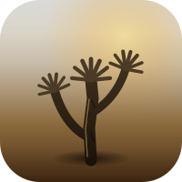

Joshua's kernel, built from nothing
os
No macOS, no Linux underneath it. I'm writing this one myself,
piece by piece, toward my own file explorer and browser.
the actual kernel, booting live in your browser
booting...
Real emulation, not a recording. Click in and type help.
How far I've gotten

Why
I already talk to Claude and get it to build things. I want an OS that does that natively, not bolted onto macOS.
How
One real piece at a time: interrupts, memory, a filesystem, graphics. No shortcuts, no borrowed kernel.
Where it's going
My own file explorer and browser, running on something I wrote myself.